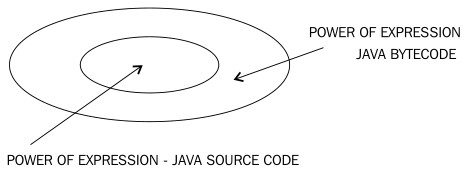
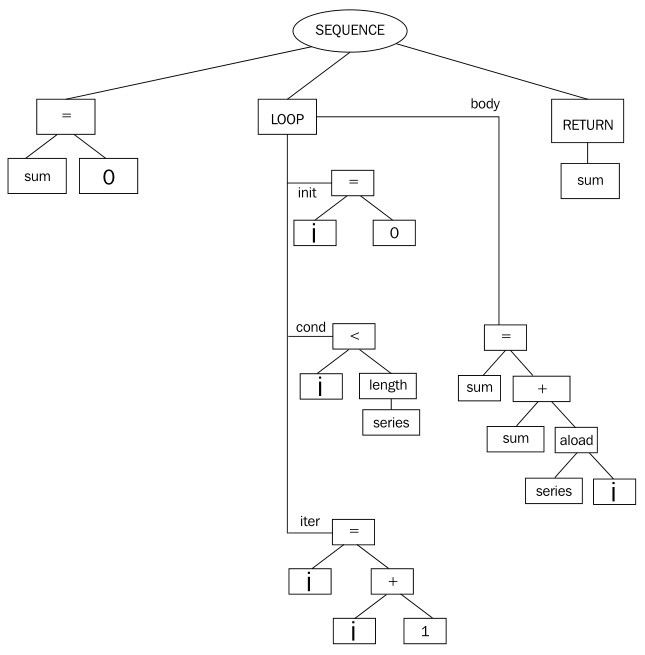

2.5 深入JIT编译器
事实上，如何将字节码编译为本地代码在JVM中运行，和如何在JVM中高效的执行代码完全是两回事，这也是近40年来专家学者深入研究编译器技术（顺带研究了下Java语言）的目的。本节将介绍JIT编译器如何将字节码编译为高效的本地代码。
2.5.1 处理字节码
通常来说，编译器首先要处理的是源代码文件，而对于JVM中的JIT编译器来说，它所要处理的是字节码，相对来说更低级一些，与汇编语言有点像。JIT编译器的前端与C++编译器的前端类似，主要对平台无关的字节码执行词法分析，因此可以在所有架构平台中重用。
尽管字节码听起来比较低级，但却具有非常不错的格式，有效的将代码（操作）和数据（操作数和常量池）区分开。 对于编译器前端来说，与其说是析构2进制的可执行文件，倒不如说在解析字节码并将之转换为程序描述。其实可以将字节码认为是另一种形式的源代码，一种结构化的程序描述。相比于普通源代码，它对程序的描述简单明了，更便于编译器分析，例如编译器可以很容易的推断出操作数的类型。
但是，对于编译器开发者来说，处理字节码却复杂的多，有时候将字节码编译为本地代码比直接编译普通源代码难得多。
这其中的一个问题就是如何处理JVM规范中要求的操作数栈。正如前面看到的，大多数字节码操作都会将操作数从栈中弹出，完成操作后再将结果入栈。而现实中，没有一种平台是基于栈运行的，都是使用寄存器来存储立即数的。将局部变量映射到本地寄存器是比较容易的，但将操作数栈映射到寄存器却比较复杂。此外，JVM规范中还定义了很多虚拟寄存器、局部变量，但需要通过操作数栈才能使用。在这一点上确实不太有效率，有人就有疑问了，已经有这么多虚拟寄存器了，为什么还非得要使用操作数栈，为什么执行add操作时不能直接执行x = y + z，而非得要使用push y, push z, add, pop x这样的形式？很明显，如果寄存器够用的话，使用第一种方式会简单许多。
事实上，当需要将字节码编译为本地代码时，对操作数栈的处理是比较复杂的。为了能够重构表达式，例如执行加法操作的表达式，必须始终保持操作数栈的存在。
另一个问题是，字节码自身的表达能力是强于Java源代码的（在某些情况下，却可能是一个优势）。当涉及到可移植性时（字节码可以由任意JVM执行），这固然挺好，而且字节码格式和Java源代码的分离使开发人员可以为其他语言编写相关的编译器，使其能够运行在JVM上，这在早期对Java的推广也起到了一定的作用。但其实，需要为其他语言生成字节码的情况比较少见，的确有一些产品可以将其他语言转换为字节码，但使用得并不广泛。当需要生成字节码时，业界更倾向于将其他语言先转换为Java，再编译Java代码为字节码。此外，自动生成的Java源代码的结构往往和编译后的Java源代码一致。

由于字节码的表达能力更强，导致了JVM 字节码校验（bytecode verification）的出现。每种JVM实现都需要检查字节码中是否存在“黑魔法”，例如直接跳转到方法外，覆盖操作数栈，或者创建递归子函数。
尽管字节码的可移植性和交叉编译的能力广受好评，但也导致了其他问题的出现，其根源就在于字节码中允许存在 非结构化控制流（unstructured control flow），即可以使用goto指令跳转到任意标签处，而在Java中这是不允许的。因此，开发人员可以创造出无法用Java表示的字节码结构。
这就导致了一些问题的发生，例如对于这种代码，该如何使用Java调试器？
在字节码中存在以下几种情况：
- 可以使用
goto指令从循环体外不经过循环头直接跳入到循环体内部（不可规约流图，irreducible flow graphs），这种方式在Java中是被禁止的。对于优化编译器来说，不可规约流图是一大障碍。 - 可以将
catch语句块放到其对应的try语句块中，这在Java是不允许的。 - 可以在一个方法中获取锁，而在另一个方法中将其释放，这同样也是被Java禁止的。在第4章中将对此深入讨论。
2.5.1.1 字节码混淆
字节码比Java源代码表达能力强所带来的问题其实更加复杂。这些年来，市面出现了各种类型的字节码混淆器，均承诺可以防止Java源代码泄漏。但实际上，这根本是不可能的，正如之前提到的，字节码中的操作代码和操作数据有着严格的界限。传统的反破解技术是通过混淆代码和数据来使竞争对手无法找到破解的关键位置的，这对于诸如 .exe这种数据和代码的界限不太分明的可执行文件是比较有效的，但对字节码来说没什么用。所以，只要对手有足够的决心，就没什么Java程序不能破解。
不同于混淆数据和代码这样的技术，字节码混淆使用一些其他的方法，通常是 命名混淆（name mangling）和 控制流混淆（control flow obfuscation）。
命名混淆是指混淆器将程序中所有的变量名、属性名和方法名重新命名，使用短且难以理解的字符串替换原命名，例如使用a、a_和a__（有时甚至是无法理解的Unicode字符串）来替换getPassword、setPassword和decryptPassword这些名字。混淆后的代码使人难以理解，无法通过方法名和属性名获取有效信息，从而加大了破解难度。不过，对于编译器开发者来说，命名混淆不算什么大问题，因为控制流并未改变。
如果字节码混淆器能够生成Java中禁止出现的非结构化控制流，那么破解起来就会困难得多，可以防止反编译器通过字节码重构出源代码。但很不幸，这项技术通常会导致优化编译器花费不必要的精力来重构已经丢失的控制流信息。有时候，甚至根本无法重构控制流，从而无法执行相关优化，降低了程序执行性能。因此，应避免使用这项技术。
2.5.2 字节码“优化器”
曾经，市面上有各种各样的字节码优化器，在Java诞生之初尤其受欢迎，但即使到现在也仍不时可以听到有关它们的消息。字节码优化器声称可以将字节码重构为更有执行效率的形式。例如，对2的幂数做除法可以转化为移位操作，或者反转循环以节省一个goto指令的执行。
事实上，在现代JVM中，无法证明运行经过“优化”的字节码能够比直接运行javac编译后的字节码更有效率。现代JVM中已经包含了能够很好的完成优化代码工作的代码生成器，即使字节码看起来比较低级，但对JVM却很友好。在将字节码编译为本地代码的过程中，任何在字节码层级所作的优化都可能会被多次转化为其他形式。
我们从未见过有用户声称使用字节码优化器能够得到更好的执行效率的例子，但却经常看到由于使用了字节码优化器而导致程序运行时与预期不同，或是在不同JVM上出现不同的行为。
因此，我们的建议是，不要使用字节码优化器，决不！
2.5.2.1 抽象语法树
正如前面提到的，字节码的优势和劣势都很明显。本书的作者们觉着将字节码看作是序列化的源代码比较好，不应该将之当作低级汇编语言，运行起来非得越快越好。在解释器中，字节码的性能确实有问题，但也不用过分夸大，因为解释执行本身就挺慢。性能优化的事情会在后面的代码流水线中完成。
尽管字节码具有紧凑和可移植性的特点，但也由于其强大的表达能力而引入了不少问题。它包含了一些低级结构，例如
goto指令、条件跳转指令，甚至是jsr指令（跳转到子函数，用于实现finally语句块）。但到Java 1.6时，javac和大多数其他Java编译器都已经将子函数内联到当前函数中了。
在将字节码编译为本地代码时，不能简单的认为该字节码是编译Java源代码生成的，需要考虑各种可能的情况。通常，编译器前端读入源代码（可能是Java、C++或其他什么的）并执行词法分析，构建 抽象语法树（abstract syntax tree， AST）。干净的抽象语法树中，控制流都是结构化的，不存在任意跳转的goto指令，而是以顺序语句、表达式和迭代（循环节点）来表示源代码的结构，而且对AST执行中序遍历就可以重构应用程序。相比于字节码，AST这种表示方式有许多优点。
以下面的代码为例，该函数用于计算数组中元素之和：
public int add(int [] series) {
int sum = 0;
for (int i = 0; i < series.length; i++) {
sum += series[i];
}
return sum;
}在将之转换为字节码时，编译器javac通常会创建一个类似于如下结构的AST：

为了优化代码，必须要满足一些先决条件，例如识别循环不变量和循环体需要对控制流图做一些比较复杂的分析。而在这里就比较容易，因为循环已经隐式的表示出来了。
但为了生成字节码，可能需要将Java编译器生成的AST中已经用循环节点表示出来的结构化循环拆散，使用条件跳转和非条件跳转来表示：
public int add(int[]);
Code:
0: iconst_0
1: istore_2 //sum=0
2: iconst_0
3: istore_3 //i=0
4: iload_3 //loop_header:
5: aload_1
6: arraylength
7: if_icmpge 22 //if (i>=series.length) then goto 22
10: iload_2
11: aload_1
12: iload_3
13: iaload
14: iadd
15: istore_2 //sum += series[i]
16: iinc 3, 1 //i++
19: goto 4 //goto loop_header
22: iload_2
23: ireturn //return sum现在，由于没有了结构化控制流信息，字节码编译器不得不花费额外的CPU资源来重构控制流信息，有些时候甚至根本无法恢复这些信息。
现在回想起来，当初在设计JVM时就直接使用经过编码的AST作为字节码格式的话，可能会是更好的选择。不少学术论文中谈到AST的压缩效果不逊于字节码，甚至可以更好，所以空间不是问题，而且运行时环境解释AST的成本只比字节码高那么一点点。
在最初的JRockit JIT编译器中，使用的是一个反编译前端，试图通过字节码来重建AST。如果重建失败，则回退为普通的JIT编译器模式。但事实上，重建AST的工作困难重重，因此这个反编译器在21世纪初就被废弃了，替换为可以直接从字节码的任意控制流中创建出控制流图的统一前端。
2.5.3 优化字节码
程序员往往会过早的优化其Java代码，这完全可以理解。你怎么能放心的将优化Java源代码的任务交给JVM这个黑盒来完成呢？当然，就某些方面来说的确是这样，但即使JVM无法完全理解应用程序的意图，它仍然可以依据收集到的信息来完成很多优化工作。
有时候人们会惊讶于应用程序在经过JVM JIT编译器优化后所达到的高效，但这其实很简单，因为在运行时环境中，JVM能够更好的检测出应用程序的运行模式，从而加以优化。而另一方面，某些因素使得应用程序的某些方面更适用于人工优化。本书并非想表达“所有代码优化工作都应该交由JVM完成”这样的观点，但是正如前文提到的，不应该在字节码层级做优化。
要写出高性能的应用程序，纯靠JVM JIT编译器优化是不行的，有些地方JVM使不上劲。例如，JVM没法将2次方复杂度的算法优化成线性复杂度，不会将程序员写的冒泡排序替换成快速排序，也不会实现一个本可以由开发人员实现的对象缓存系统，像这样的例子还有很多。JVM不是变戏法的，自适应优化也永远不会将烂算法替换成好算法，它顶多是使烂算法运行的更快一些而已。
JVM可以轻松应对标准面向对象代码中的很多结构。避免声明额外变量，或者直接访问成员属性而不是调用getter或setter等方法对程序员其实没什么帮助，而且这些粗浅的优化并不能使经过JIT编译器优化后的代码运行得更快，却可能会使Java代码的可读性变差。
有些时候，对Java源代码做优化会适得其反。绝大部分写出没有可读性代码的人都声称是为了优化性能，其实就是照着一些错误的性能测试报告的结论写代码，而这些性能测试往往只涉及到了字节码解释执行，没有经过JIT编译器优化，所以并不能代表应用程序在运行时的真实表现。例如，某个服务器端应用程序中包含了大量对数组元素的迭代访问操作，程序员参考了那些报告中的谬论，没有设置循环条件，而是写一个无限
for循环，置于try语句块中，并在catch语句块中获取ArrayIndexOutOfBoundsException。这种糟糕的写法不仅使代码可读性极差，而且一旦运行时对之进行优化编译的话，其执行效率反而比普通循环方式低得多。其原因在于，JVM的基本假设之一就是，“异常是很少发生的”。基于这种假设， JVM会做一些相关优化，所以当真的发生异常时，处理成本就很高。
当你在排查性能瓶颈时，应该清楚的知道相关监控指标的真正含义。不是所有的问题都可以通过一个小型的、自包含的基准测试来排查的，也不是每个基准测试都能准确反映出问题的本质的。第5章将会详细介绍基准测试的相关内容，以及如何测试Java应用程序的性能。本书的第2部分将JRockit Mission Control套件的各个组件做介绍，这些组件是做性能分析的理想工具。